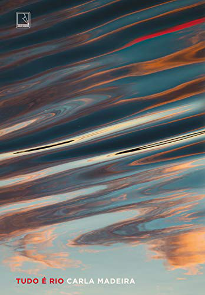

Embalado pelo melhor do rock'n'roll, um romance inesquecível sobre uma banda dos anos 1970, sua apaixonante vocalista e o amor à música. Da autora de Em Outra Vida, Talvez?.
Todo mundo conhece Daisy Jones & The Six. Nos anos setenta, dominavam as paradas de sucesso, faziam shows para plateias lotadas e conquistavam milhões de fãs. Eram a voz de uma geração, e Daisy, a inspiração de toda garota descolada. Mas no dia 12 de julho de 1979, no último show da turnê Aurora, eles se separaram. E ninguém nunca soube por quê. Até agora.
Esta é história de uma menina de Los Angeles que sonhava em ser uma estrela do rock e de uma banda que também almejava seu lugar ao sol. E de tudo o que aconteceu — o sexo, as drogas, os conflitos e os dramas — quando um produtor apostou (certo!) que juntos poderiam se tornar lendas da música.
Neste romance inesquecível narrado a partir de entrevistas, Taylor Jenkins Reid reconstitui a trajetória de uma banda fictícia com a intensidade presente nos melhores backstages do rock'n'roll.

Tudo é rio é o livro de estreia de Carla Madeira.
Com uma narrativa madura, precisa e ao mesmo tempo delicada e poética, o romance narra a história do casal Dalva e Venâncio, que tem a vida transformada após uma perda trágica, resultado do ciúme doentio do marido, e de Lucy, a prostituta mais depravada e cobiçada da cidade, que entra no caminho deles, formando um triângulo amoroso.
Na orelha do livro, Martha Medeiros escreve:
Tudo é rio é uma obra-prima, e não há exagero no que afirmo. É daqueles livros que, ao ser terminado, dá vontade de começar de novo, no mesmo instante, desta vez para se demorar em cada linha, saborear cada frase, deixar-se abraçar pela poesia da prosa. Na primeira leitura, essa entrega mais lenta é quase impossível, pois a correnteza dos acontecimentos nos leva até a última página sem nos dar chance para respirar. É preciso manter-se à tona ou a gente se afoga.
A metáfora do rio se revela por meio da narrativa que flui – ora intensa, ora mais branda – de forma ininterrupta, mas também por meio do suor, da saliva, do sangue, das lágrimas, do sêmen, e Carla faz isso sem ser apelativa, sem sentimentalismo barato, com a habilidade que só os melhores escritores possuem.